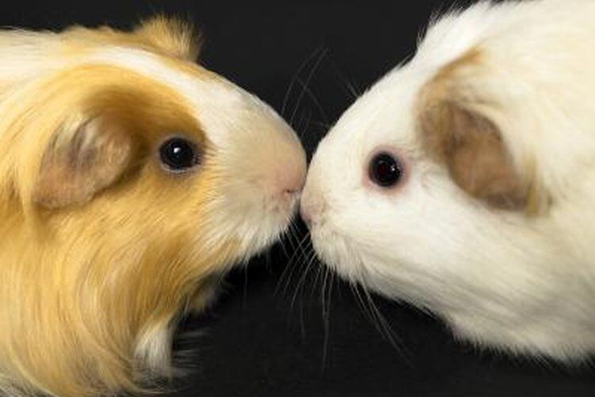
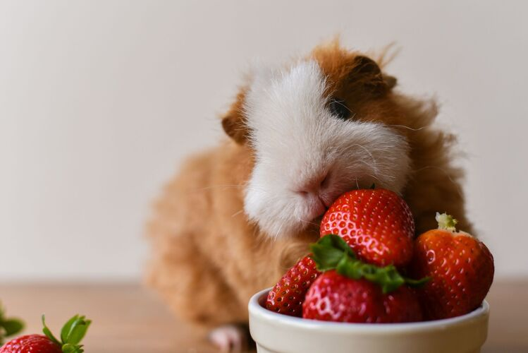
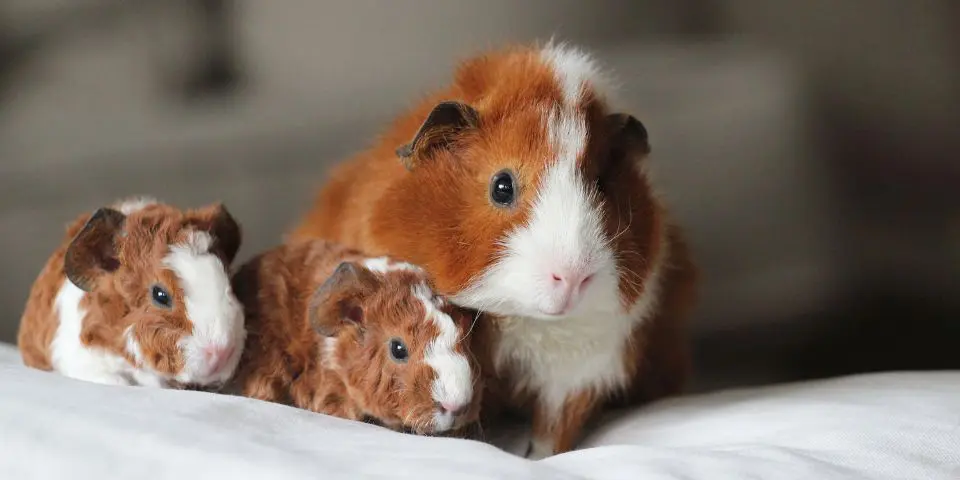

Pochodzenie
Kawie domowe pochodzą z Ameryki Południowej. Pierwotnie były
hodowane przez ludność andyjską jako zwierzęta użytkowe.
Zostały udomowione już około 5000 lat temu. W kulturze Inków
kawie domowe miały również znaczenie religijne i
ceremonialne. Do Europy zostały sprowadzone przez
hiszpańskich konkwistadorów w XVI wieku.
Od tego czasu stały się popularnymi zwierzętami domowymi na
całym świecie. Dziś są cenione za swoje łagodne usposobienie
i łatwość w pielęgnacji.
Komunikacja
Kawie domowe posiadają bogaty repertuar dźwięków, którymi
komunikują się ze sobą i z ludźmi. Charakterystyczne
"popcorning" to skoki z radości, które często można
zaobserwować u młodych kawie domowych. Inne dźwięki, takie
jak gwizdy, piski i mruczenie, mają różne znaczenia.
Gwizdy mogą oznaczać głód lub radość, piski – niepokój, a
mruczenie – zadowolenie. Komunikacja kawie domowych jest
bardzo rozwinięta i potrafią one wyrażać swoje emocje na
różne sposoby. Warto zwracać uwagę na te dźwięki, aby lepiej
zrozumieć potrzeby swojego pupila. Dźwięki są kluczowym
elementem ich interakcji społecznych.


Żywienie
Kawie domowe mają specyficzne wymagania dietetyczne, które
należy przestrzegać, aby zapewnić im zdrowie. Nie potrafią
same syntetyzować witaminy C, dlatego muszą ją otrzymywać z
pożywienia.
Najlepszym źródłem witaminy C są świeże warzywa i owoce,
takie jak papryka, brokuły i cytrusy. Podstawą ich diety
jest siano, które zapewnia im odpowiednią ilość błonnika.
Oprócz siana, ważne jest podawanie im świeżej wody i
specjalnie przygotowanej karmy dla kawie domowych. Unikanie
nieodpowiednich pokarmów, takich jak sałata lodowa czy
ziemniaki, jest kluczowe. Prawidłowa dieta zapobiega wielu
chorobom i zapewnia długie, zdrowe życie.
Kawie domowe jako zwierzęta socjalne
Kawie domowe są bardzo społecznymi zwierzętami, które
najlepiej czują się w grupach. W naturalnym środowisku żyją
w koloniach liczących do dwudziestu osobników. Są bardzo
przywiązane do swoich towarzyszy i często można
zaobserwować, jak pielęgnują się nawzajem.
Samotność może powodować u nich stres i problemy zdrowotne.
Dlatego zaleca się trzymanie co najmniej dwóch kawie
domowych razem, aby zapewnić im towarzystwo. Interakcje
społeczne są dla nich niezwykle ważne. Pomagają im utrzymać
zdrowie psychiczne i fizyczne.
